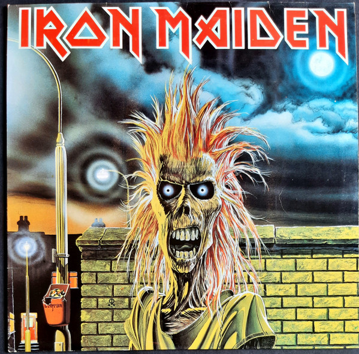
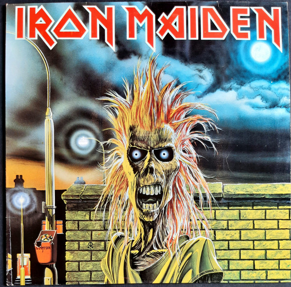
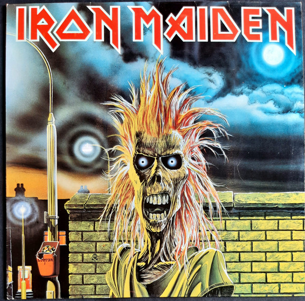
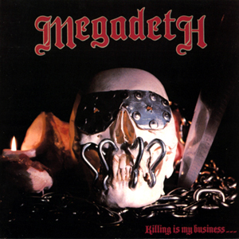
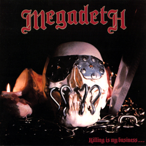
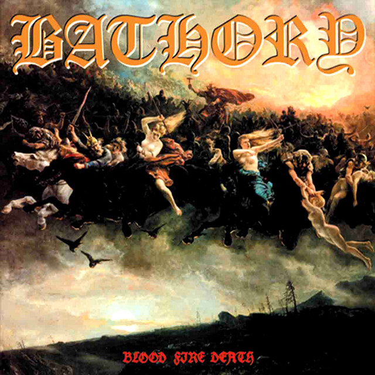
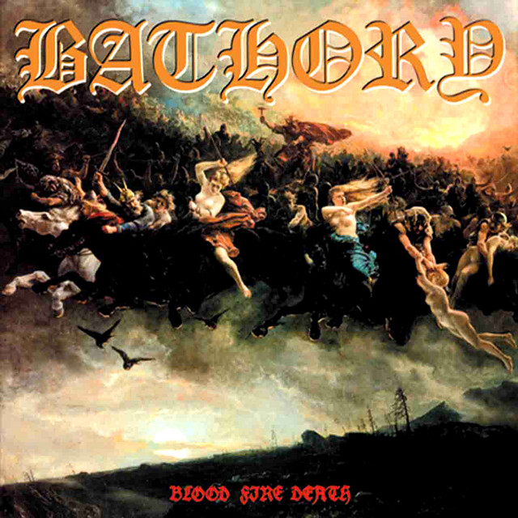

Explore Heavy Metal Subgenres

Explore Heavy Metal Subgenres
This is a platform for sharing knowledge and resources related to metal genres and its subgenres.
Heavy Metal is characterized by its loud, aggressive sound and powerful guitar riffs. It emerged in the late 1960s and early 1970s, with Black Sabbath and Iron Maiden pioneering the genre.

Explore Heavy Metal Subgenres
Thrash Metal is known for its fast tempos, aggressive guitar playing, and complex rhythms. It emerged in the early 1980s with bands like Metallica, Megadeth, and Slayer leading the charge.
Thrash Metal is often characterized by its socio-political lyrics and high-energy performances. It has influenced many other genres and remains popular today.
 

 Explore Thrash Metal Subgenres
Explore Thrash Metal Subgenres
Death Metal is known for its heavy, distorted sound and deep growling vocals. It often features complex song structures and dark themes. Bands like Death and Morbid Angel are seminal in this genre.
Death Metal emerged in the mid 1980s and has since evolved into various subgenres, including technical death metal and melodic death metal.
 Explore Death Metal Subgenres
Explore Death Metal Subgenres
Black Metal is characterized by its raw sound, high-pitched shrieking vocals, and atmospheric elements. It often incorporates themes of nature, mythology, and anti-religious sentiments. Bands like Mayhem and Bathory are iconic in this genre.
Black Metal emerged in the early 1980s and is known for its lo-fi production and use of blast beats.
 
Explore Black Metal Subgenres

Explore Black Metal Subgenres
Power Metal is known for its uplifting melodies, fast tempos, and fantasy-themed lyrics. It often features operatic vocals and intricate guitar solos. Bands like Dragonforce and Blind Guardian are prominent in this genre.
Power Metal emerged in the late 1980s and is characterized by its epic soundscapes often incorporating elements of classical music.
 Explore Power Metal Subgenres
Explore Power Metal Subgenres